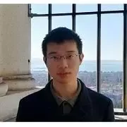
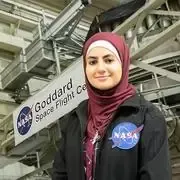

People
Principal Investigator

Prof. Zubin Jacob
Elmore Professor of Electrical and Computer Engineering
Associate Professor (by courtesy), Department of Physics and Astronomy
Personal Homepage: Prof. Zubin Jacob
Research Scientists
Dr. Sathwik Bharadwaj
Link to personal website
Dr. Sathwik Bharadwaj joined the group in August 2020. He received his Ph.D. in Physics from Worcester Polytechnic Institute, Worcester, Massachusetts in July 2020, where he developed scalable quantum scattering theories for low-dimensional materials. Previously, he obtained M.Sc. in Physics from University of Hyderabad, India in 2015. His research interest focuses on development of theoretical and multiscale numerical techniques to study the electronic and photonic properties of the condensed matter systems, and further apply this knowledge to enable the development of novel nanodevices for quantum technologies.
Dr. Angshuman Deka
Angshuman completed his Ph.D. at Kyushu Institute of Technology, Japan. He worked on magnetic device fabrication, magnetization dynamics, and spintronic phenomena during his Ph.D. This included electric-field controlled spin pumping, spin Hall effect, and spin torques. Currently, he is involved in the experimental investigation of magneto-optical phenomena in nanomagnetic detectors. Prior to his Ph.D., he had completed his undergraduate studies from University of Delhi and his masters from Indian Institute of Technology, Delhi. During his undergraduate studies, he was a visiting student at Indian institute of Science, Bangalore and subsequently interned at National University of Singapore during his masters. Apart from research he really enjoys novels and coffee. For outdoor activities, he loves hiking. He currently serves as a member of the Editorial Review Board of IEEE Magnetics Letters.
Dr. Fanglin Bao
Dr. Fanglin Bao received his B.S. degree in Physics in June 2011 and PhD in Optics in June 2016 at Zhejiang University. His previous research focuses on the Casimir effect within an inhomogeneous system, including the renormalization of the Casimir energy, the inhomogeneity-induced correction to the normal Casimir force, and lateral Casimir forces in inhomogeneous systems. His current research interest extends to tensor networks, neural networks and their applications in quantum physics.
Post-docs
Dr. Xueji Wang
Dr. Jungho Mun
Jungho received his B.S. and PhD in Chemical Engineering at Pohang University of Science and Technology. His previous research focuses on optical scattering effects in discrete meta-atoms, their interactions with structured lights, and numerical techniques to study them. His current research extends to light emission engineering and lights in atomistic quantum materials.
Dr. Farid Kalhor
Farid Received his Bachelor’s and Master’s degree in Electrical Engineering from the University of Tehran in 2009 and 2012. He Joined Zubin Jacob’s group in 2014. Currently, he is studying spin-momentum locking of light and its role in light matter interaction.
PhD Students
Leif Bauer
Leif received his Bachelor’s degree in Electrical Engineering in 2018 from Iowa State University. While at Iowa State, he studied magnetic properties of Faraday rotators. His current work involves nanoscale magnetometry and studying the properties of spin.
Tyler Sentz
Tyler received his Bachelors in Bachelor of Science degree in Electrical Engineering and a minor in Physics at Purdue University in Dec 2017. He started working towards a PhD in Electrical Engineering at Purdue University. Tyler is working on energy transfer systems and developing skills in materials and fabrication at Birck Nanotechnology Center.
Ali Jishi
Ali received his Bachelor's degree in Electrical Engineering in 2017 and his Master’s degree in Electrical and Computer Engineering in 2019 from the University of California, Los Angeles. He is currently working on characterizing and engineering photothermal effects.

Wenbo Sun
Wenbo received his B.S. degree in Physics from Nanjing University, Nanjing, China in 2019. He is pursuing his Ph.D. degree in electrical and computer engineering in Purdue University, West Lafayette, IN, USA. He is currently working on DFT calculations of material properties.
Hyun Soo Choi
Hyun Soo received his Bachelor of Engineering degree in Electrical Engineering at Stony Brook University. He worked as a researcher at Seoul National University in MRI imaging and machine learning. He is currently working on quantum imaging perception.
Shoaib Mahmud
Shoaib received his B.Sc. and M.Sc. in Electrical and Electronic Engineering from Bangladesh University of Engineering and Technology (BUET) in 2017 and 2020, respectively. He joined Zubin Jacob’s group in 2021, as a PhD student. He completed his master’s thesis on topological properties of 2D materials. He is currently working on spin quantum electrodynamics.
Ziyi Yang
Ziyi received her Bachelor's degree in Communication Engineering at Shanghai University in 2018 and her Master's degree in Electronic Science at the University of Science and Technology of China in 2021. During her master's years, she studied the transmission of orbital angular momentum light and spin-orbit entanglement in spun fibers. She is currently working on thermal radiation engineering.
Sakshi Gupta
Sakshi received her Bachelor's degree in Engineering Physics in 2021 from the Indian Institute of Technology, Delhi. She is pursuing her Ph.D. degree in Physics at Purdue University. Her current work is on the magneto-optical behavior of nanoscale devices.
Pronoy Das
Pronoy received his (Integrated) Bachelor's and Master's degree in Physics at the Indian Institute of Science Education and Research Kolkata in 2021. Previously, he worked on Magnetic resonance spectroscopy and spin control in solid-state spin systems. Currently, he is involved in the experimental study of light-matter interactions in single-spin quantum systems.
Mohamed A. Mousa
Mohamed received his Bachelor's degree in Electronics and Communications Engineering from Cairo University in 2017. During his undergraduate studies, he was involved in the research and design of 5G transceivers system. Mr. Mousa was awarded his Master's degree in Engineering Physics from Cairo University in 2021. During his MSc studies, he invented a new filtering technique for rapid Raman identification without using Raman spectrometer. He also worked as a part-time RFIC design Engineer at Analog Devices Inc. (ADI) from 2017 to 2021. For this period, he designed integrated circuits for 5G applications which became commercialized since then. He joined Zubin's group in fall 2021 to work on magneto-optical interactions for nanoscale devices such as MTJs and SPAD arrays. During his free time, Mohamed enjoys swimming, cycling, and hiking.
Daien He
Daien received his bachelor's degree (2019) and master degree (2020) within the field of microelectronics and nanotechnology in electrical engineering at Purdue University. He is currently pursuing the Ph.D. degree in the school of Electrical and Computer Engineering at Purdue University. His field of interest includes micro-scale semiconductors characterization and fabrication. He joined the Electrodynamics group in 2021 winter. Currently, his research focuses on thin-films thermal conductivity measurement by photon detection of blackbody radiation based on the laser flash method.
Aashish Poudel
Aashish completed his undergraduate studies in Engineering Physics and Mathematics at Ramapo College of NJ. He is currently pursuing his Ph.D. in Computational Physics at Purdue University. He joined our group in January 2022 and has been working on computational modeling of high-temperature material emissions. He is interested in using various computation tools and approaches to apply physics to engineering and problem-solving.
Seungman Choi
Seungman Choi received his Bachelor's (2017) and Master's degree (2019) in Mechanical Engineering at Tokyo Institute of Technology. After the graduation, He worked as a research associate at Korea Advanced Institute of Science and Technology in ultra-precision engineering and metrology using pulse laser (2019-2022). He joined Zubin's group in fall 2022, and is currently working on quantum imaging.
Wei Zhang
Wei Zhang received her B.S. degree in Electrical Engineering from Penn State, PA in May 2022. During her undergraduate research, she focused on the fabrication of two-dimensional superlattice heterostructures and the study of electrical transport in magnetic topological insulators. She will pursue her doctorate study in electrical engineering in Electrodynamics Lab at Purdue University.
Utkarsh Singh
Utkarsh received his Bachelor’s degree in Electronics & Communication Engineering in 2020 from Delhi Technological University. During his junior and senior years, he was also involved in research on exploring emerging nanoscale devices for neuromorphic computing as a visiting researcher at the Indian Institute of Technology Delhi. After graduating, he worked in the Memory Division at Samsung Semiconductor India Research as a Digital Design engineer for two years. Along with academics and research, Utkarsh is also an active member at IEEE and has also volunteered in several roles during the past six years. At Purdue, he is involved in the experimental investigation of magneto-optical phenomena in nanoscale devices. Apart from work, he loves traveling, music and sports.
Peter Menart
Peter Menart is from Dayton, OH, and received his Bachelor’s degree in Physics and Math at The Ohio State University in Spring 2022. In his undergraduate research, he worked on a spontaneous parametric down-conversion setup and characterized field-programmable gate arrays. He joined the group in Fall 2022 and is working on quantum imaging. He enjoys reading, running, judo, and going to art museums.
Andy Schramka
Andy Schramka grew up in LaGrange, Illinois, and received his B.S. degree in Engineering Physics from the University of Oklahoma in May 2022. While at Oklahoma, he studied the properties of 3D printed dielectric microspheres. His current work at Purdue University focuses on infrared imaging and rendering.
Shubhankar Jape
Shubhankar Jape received his bachelor’s degree in electrical engineering and a minor in physics and math from Indiana University Purdue University Indianapolis. During his undergraduate studies, he worked on circuit design for pattern recognition methods in power systems and the characterization of nebulized droplets for optical traps. He is working on thermal infrared imaging at the Birck Nanotechnology Center
Shubhankar Jape
Shubhankar Jape received his bachelor’s degree in electrical engineering and a minor in physics and math from Indiana University Purdue University Indianapolis. During his undergraduate studies, he worked on circuit design for pattern recognition methods in power systems and the characterization of nebulized droplets for optical traps. He is working on thermal infrared imaging at the Birck Nanotechnology Center
Vineet Punyamoorty
Vineet received his Bachelor's and Master's degrees in Electrical Engineering from the Indian Institute of Technology Bombay. He is currently a PhD student in Prof. Zubin Jacob's research group, where he works on the theory of atomistic pico-scale electrodynamics.

Jehan Shalabi
Jehan earned her Bachelor of Science degree in electrical engineering from the New Jersey Institute of Technology (NJIT) in May 2022. During her 2021 MIT research internship, she worked on autonomous vehicle navigation for a multi-robot system with the Robust Robotics Group at the MIT Computer Science and Artificial Intelligence Laboratory. As an NJIT McNair Scholar, she also conducted research on Drone-Assisted Mobile Networking. With a passion for advancing space missions, Jehan interned at NASA Goddard Space Flight Center in the Safety and Mission Assurance division where she aggregated spacecraft component information to assess component risk for future designs and missions. Jehan is also an alum of the NASA L’SPACE Mission Concept Academy. She collaborated with a team to develop a preliminary design review to discover minerals underground and on the surface of mars. As an alum of Passaic County Community College (PCCC), where she graduated with her Associate of Science degree in engineering science, she instructed flight simulation in PCCC’s avionics laboratory. Jehan will begin her Ph.D. in electrical engineering this Fall of 2022 at only 20 years old and will work with the electrodynamics group on thermal imaging. Apart from work, Jehan enjoys fitness and sports, especially basketball and Brazilian Jiu-Jitsu.
Master's Students
Ricardo Alan de Bastos
Second Lieutenant Ricardo de Bastos grew up in Denver, Colorado, and he received his Bachelor of Science in Electrical and Computer Engineering from the US Air Force Academy in 2022. During his undergraduate studies, he was involved in the research, design, and construction of a Pulsar detection system. He is attending Purdue University to work towards his Masters in Electrical and Computer Engineering during his first assignment in the Air Force. His research at Purdue University primarily focuses on Thermal Infrared/Hyperspectral Imaging and its applications for the US military. Ricardo’s other academic interests include RF engineering, microelectronics, and aeronautical engineering, and he hopes to explore these subjects further through flight testing for the US Air Force. During his free time, Ricardo enjoys skydiving, flying, hunting, and golfing. After graduation, he will attend pilot training at Sheppard Air Force Base in Wichita Falls, Texas.